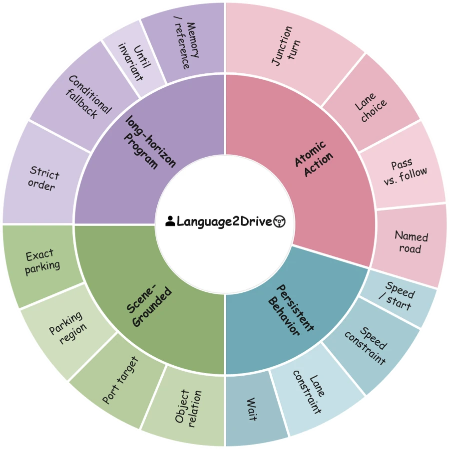
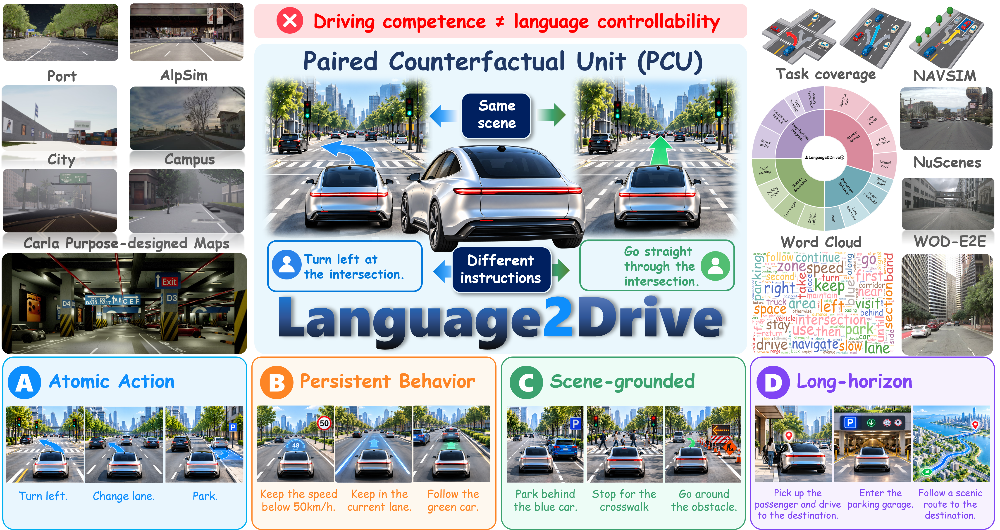
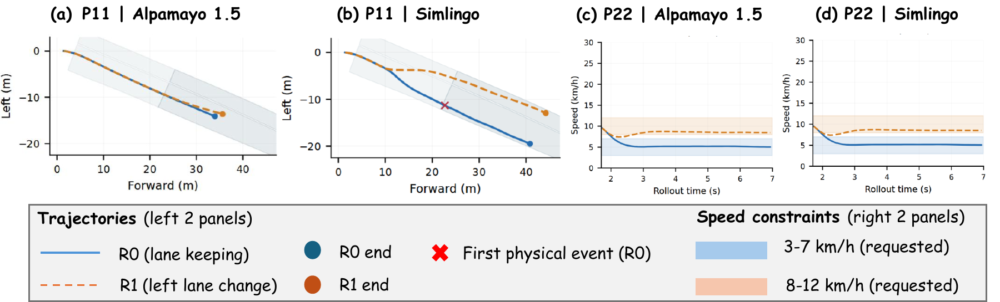
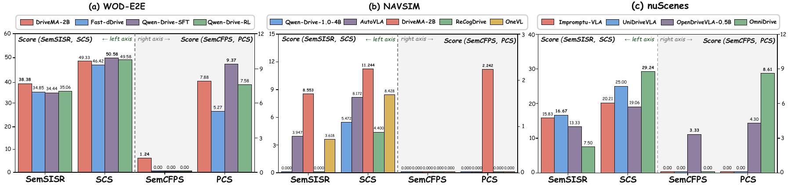
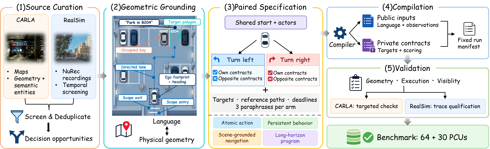

Select the maneuver.
Choose the requested local action among feasible alternatives.
“Turn left at the junction.”
Language2Drive: Do Vision-Language-Action Models Really Follow the Instructions in Autonomous Driving?
Keep the scene fixed. Change the instruction.
Test whether the model completes both feasible alternatives.
Driving quality and
language control are measured separately.
Language2Drive turns instruction following into a reproducible paired evaluation: matched conditions, mutually exclusive requests, and native execution evidence.
Explore the interactive framework →feasible alternatives
in one matched world
A two-minute introduction to the benchmark: the paired mechanism, four instruction scopes, and evidence from simulation and real-world logs.
Four scopes ask progressively richer questions about instruction execution. Five tracks test those questions in complementary environments.
Choose the requested local action among feasible alternatives.
“Turn left at the junction.”
Preserve a requested behavior over an interval, rather than one instant.
“Keep a safe following distance.”
Ground a physical place or reference in the observed driving scene.
“Drive to the campus gate.”
Track stages, references and execution order across a longer drive.
“Reach the gate, then the visitor lot.”

Three open-loop backendsA pair starts from the same scene, seed and initial state. Each instruction requests a different, feasible outcome.

Purpose-designed driving simulation · six maps
AlpaSim · 23 reconstructed real-world scenes
Frozen test release · 15 dev / 60 held-out
19 recordings · four instruction wordings
STOP/GO and speed-choice contracts · P0
Four instruction scopes × five evaluation tracks. Cohort sizes follow the paper’s evaluation protocol.
A PCU pairs two feasible, mutually exclusive instructions under matched non-language inputs. Both arms must succeed to demonstrate paired instruction following.
One public observation envelope.
Model → actual trajectory A
Same model → actual trajectory B
Requested contract ✓
Opposite contract rejected ✓
Full execution requirements ✓
Strict single-instruction success versus successful execution of both alternatives.
Measure compliance and the weaker arm, beyond a single binary verdict.
Equivalent requests should preserve successful behavior across rewrites.
Observed cameras, public ego history, the active instruction and a trajectory output specification. Evaluator targets, arm identities, opposing instructions and semantic contracts stay outside the model request. CARLA standardized evaluation also withholds route identity and simulator seed.
Inspect the public adapter contract ↗Training-free baselines across five evaluation tracks. Explore driving quality, instruction success and paired compliance for each model.
Read driving quality and instruction following together.
Native driving metrics, strict paired success and graded compliance offer complementary views of each model.
Explore actual model results and benchmark targets across five backends. Switch scenes, models and task families; compare both sides of each instruction pair.
What the model actually produced: executed drives or predicted trajectories.
What the instruction asks for: reference trajectories or reference-controller examples.
Video unavailable. Restore the local media bundle using the showcase build instructions.
Follow both instruction arms as the video plays. Open a transcript to explore every recorded output.
Instruction A · requested goal
Instruction B · requested goal
No cases match these filters. Try another model or reset the filters.
63 clips · five backends · diverse scenes, task families and model comparisons.


Source curation, geometric grounding, paired specification, compilation and validation produce the frozen closed-loop cohorts.

Keep your model in its own environment. The SDK handles public requests, trajectory validation, native exports and track-specific scoring.
Install from the source checkout or release wheel. Choose Open-loop, CARLA or RealSim dependencies to match your evaluation.
predict(request).Return ego-frame XY waypoints on the requested time grid. Your factory creates independent state for each rollout.
Generate one resource configuration. Launch CARLA, RealSim and Open-loop through one adapter; each backend saves native evidence and scores.
git clone https://github.com/ZihanYou/Language2Drive.git
cd Language2Drive
python -m pip install -e '.[openloop]'
# Probe official sources; provision selected environments
language2drive setup --tracks openloop
# Optional resource download / simulator provisioning
language2drive setup --tracks all --runtime --downloadEvery reported baseline uses an existing checkpoint without Language2Drive training or fine-tuning. We plan to release the official versioned dataset and an official SOTA model with its recipe. Follow the dataset release ↗
Evaluate once. Share the protocol, native scores and execution coverage. Share your model with the research community.
Prepare a result submission ↗If Language2Drive supports your research, please cite our paper.
Read the manuscript ↗@misc{language2drive,
title = {Language2Drive: Do Vision-Language-Action Models Really Follow the Instructions in Autonomous Driving?},
author = {You, Zihan and
Fan, Zehua and
Lyu, Wenqi and
Wang, Aoqi and
Wang, Ni and
Yang, Yifei and
Zhao, Linge and
Li, Huan and
Ang, Sining and
Yang, Yuguang and
Chen, Jueyu and
Li, Xiangyu and
Wei, Qianshan and
Pei, Jieyuan and
Wang, Yuxin and
Chen, Zhiwen and
Li, Jiaqi and
Song, Wenxuan and
Qiao, Yanyuan and
Zhu, Benjin and
Li, Haoang and
Wang, Yan},
howpublished = {Research manuscript},
url = {https://github.com/ZihanYou/Language2Drive}
}